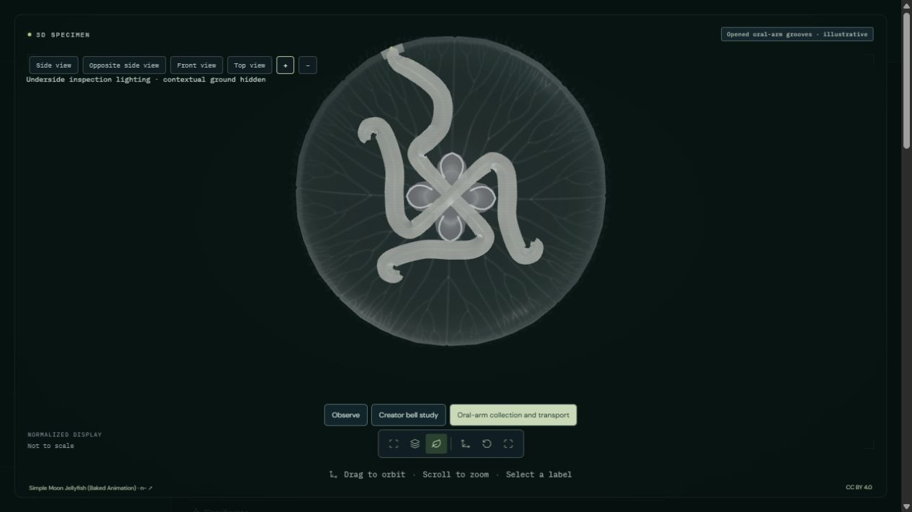
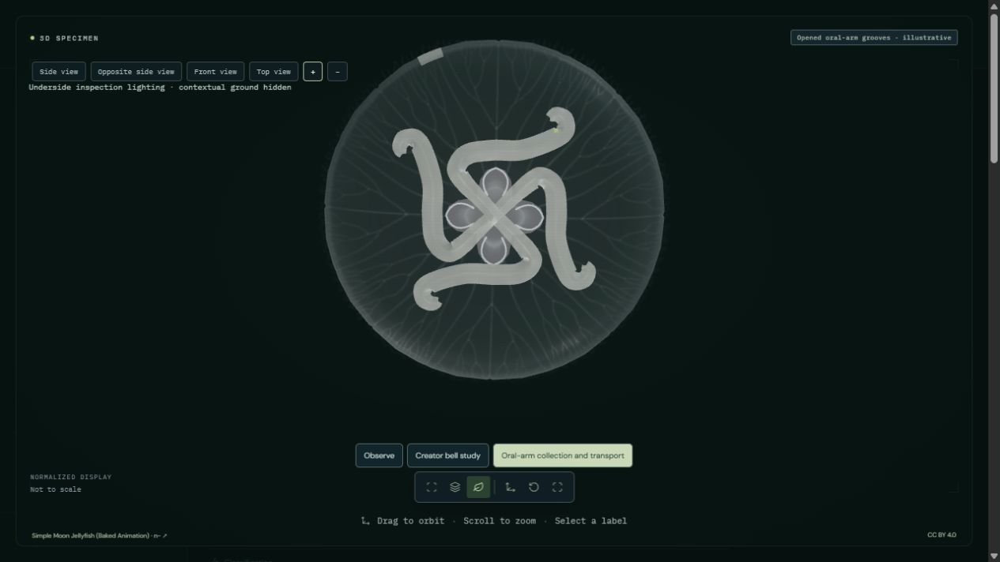
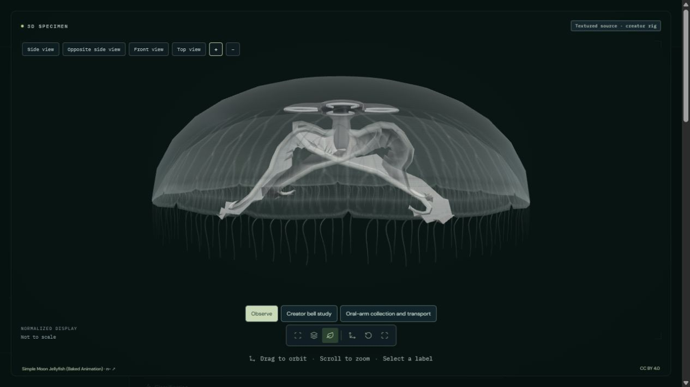

A finite 20-second study articulates the distal joints of one oral arm toward a selected marginal collection site. An enlarged marker then follows an inward lateral-tract route. Four reconstructed V-shaped grooves are opened for inspection in place of the creator oral-arm surfaces during this study. Observe and the creator bell study restore the original arms.
Articulated collection and prescribed external transport only. The marker begins already collected at the margin; nematocyst capture, microscopic cilia, mucus rheology, rejection, basal outward transport, internal gastric routing and digestion are not simulated. Groove separation, collection-fold dimensions and timing are authored. No photorealistic, anatomical or physiological validation.



The marker is an enlarged explanatory example with prescribed movement. It is not a particle-tracking experiment. Only one collection site is reconstructed. Opposing outward transport, selection and internal processing remain absent. The original n- CC BY4.0 model is retained and credited in the viewer; the opened grooves are additional authored geometry. Tests verify software behavior and preservation, not biological validity.
49 animal processes remain fully unavailable; partial studies retain explicit limitations.